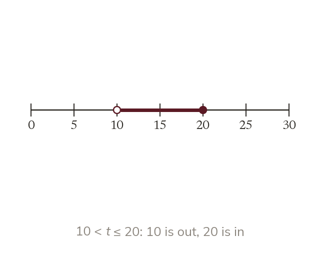

Classes with no gaps
Continuous data can take any value. So classes are inequalities: 10 < t ≤ 20. No gaps: every value falls in exactly one class.
Continuous data can take any value, so its classes are written as inequalities such as 10 < t ≤ 20. The boundaries leave no gaps, so every value falls into exactly one class.